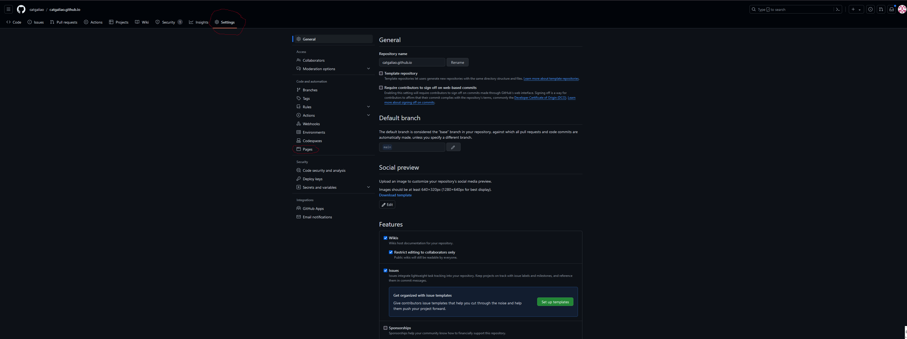

hey guys, for this website tutorial we are going to use a free website hosting service like Github pages. now this won't be perfect, so you won't be able to have a dataBase If you want users
Step one: create the body- every website needs the body or barebones script to work. If you have a repository on github pages, youre first step is to create a file called index.html. this file will serve as your homepage.
to do this in github, go to settings, pages , danger zone, and enable github pages. next, make your repository PUBLIC. your website will be https://replacewithyourusername.github.io
 click here if you are having trouble publishing your website